| Programme | Stellar Instawards (Cohort 2026) |
|---|---|
| Milestone | M2 · Week 2 — Reputation-Gated Routing (Deliverable D2) + External Agent Execution Path (Epic 2) |
| Sprint week | Mon 2026-09-14 → Fri 2026-09-18 |
| Network | Stellar testnet only |
| Team | Danielle Bagaforo Meer — lead engineer (GitHub ALGOREX-PH) Rieselle Saure (“Rie”) — PM + QA (GitHub rie-hash14) |
| Evidence captured | 2026-09-19, from the live testnet deployment and public GitHub / Stellar Expert pages. Each page states its source URL and capture time. |
| AgentRegistry | CAPHXWU53UZUZJGV7IAE57NNMH3YYB5MTWO6YA53KKMXSFVLOITBJ3GQ |
|---|---|
| ReputationLedger | CDCSOBEVZUPQZV5GV4D6KYHZCLNGW2KXY74RUHSZ3EZUXF34DPW422ZT |
| PaymentEscrow | CBJPTMAPMGODGZCZ2IMEQSRUX3WGUXNMKDTNN2KMJ3NFGYZ5OJ5525PI |
| AttestationRegistry | CBYUZKOET43UXTBXZUJIBBJW5ODGD2J2AZVVXCR3QONGOCAHOXQQHEGK |
| Asset SAC | CDLZFC3SYJYDZT7K67VZ75HPJVIEUVNIXF47ZG2FB2RMQQVU2HHGCYSC |
| — | What we shipped in Week 2 | summary | p. 2 |
| — | Stellar integration this week | summary | p. 3 |
| 01 | Plan card: each step’s reputation and the routing floor, before payment | 3.04 · D2 | p. 4 |
| 02 | Marketplace standing: floor stated once, provenance and standing marks | 3.05 · D2 | p. 5 |
| 03 | Operator dashboard (“My Agents”), no wallet connected | 2.06 · Epic 2 | p. 6 |
| 04 | Bind an endpoint to an on-chain agent, by wallet signature | 2.01 / 2.05 · Epic 2 | p. 7 |
| 05 | Backend /readiness: cold-start headroom and whether ratings can be written | BE #58 / #59 · D2 | p. 8 |
| 06 | Backend PR #59 — planner-outage fallback, observable ratings, log redaction | BLO-121 · backend | p. 9 |
| 07 | Frontend PR #62 — the plan card says when a plan is the planner fallback | BLO-121 · frontend | p. 10 |
| 08 | UAT PR #3 — Rie’s Week-2 QA commits | QA · rie-hash14 | p. 11 |
| 09 | Backend PRs merged 13–18 Sep 2026 (13) | backend delivery | p. 12 |
| 10 | Frontend PRs merged 13–18 Sep 2026 (10) | frontend delivery | p. 13 |
| 11 | Contracts PR #2 — the deployed address book is tracked in git | 3.07 | p. 14 |
| 12 | The public reference external agent | 2.04 · Epic 2 | p. 15 |
| 13 | set_scorer on the ReputationLedger — on-chain rating writes enabled for production | on-chain ratings enabled | p. 16 |
| 14 | Week-2 public build post on X | 7.02 · published 2026-09-19 | p. 17 |
Every page names the public URL it was captured from, so each claim can be checked live. On the plan-card and marketplace pages every agent carries the ≈3.50 starting estimate and clears the 2.75 routing floor, which each page states and applies.
This week we shipped the external agent execution path and reputation-gated routing (Deliverable D2), both live on Stellar testnet at orizons.xyz.
/readiness verifies production is the ledger's authorized scorer.All work runs on Stellar testnet.
stellar-sdk 13.2.1: builds unsigned XDR for wallets to sign, simulates, prepares and submits Soroban transactions, reads contract storage, verifies SEP-53 message signatures.@stellar/stellar-sdk 15.0.1 and @creit.tech/stellar-wallets-kit 2.1.0 for wallet connection and transaction / message signing.owner_of gates endpoint binding; set_active delisting is honoured by routing; register for new agents.rep_state reads feed the routing floor; submit records ratings; /readiness reads its storage via getLedgerEntries to confirm the authorized scorer.dispatch_signer (GB5MKHDF…KCMR).| Date | Call | Transaction hash |
|---|---|---|
| 09-17 | AgentRegistry.set_active (delist) | a710b6776042d810fa1a41ec17cc0b299c606fc2a7f54bd28c129e20bbe6e8e4 |
| 09-17 | AgentRegistry.register (calculatorai) | 0741a0822b6976f88a4582ffc65f1528004a9a5c3c544171e4be7ba099b1c8aa |
| 09-17 | PaymentEscrow.authorize (0.168 XLM) | 67701b46ef60bf488481464cf527aeadb01bb407cf294efc120c5f4ecc31e56d |
| 09-17 | AgentRegistry.register (algorex) | 7e3b6c02731906ddb685b080f11c63e0c1c2665a7bad0f0836bfa7ee5d83c872 |
| 09-19 | ReputationLedger.set_scorer | 216e1b5f6ade4d75ec671bcda27b462bfd373d041b1ba2150d76002ee8d201f8 |
| 09-19 | AttestationRegistry.set_sealer | c965980fd06d5917bfa46fdefc72898422a3f50136e0ac4f487e4ed0f7a19a3c |
Each hash opens at stellar.expert/explorer/testnet/tx/<hash>.
soroban-testnet.stellar.org) — simulateTransaction, sendTransaction, getLedgerEntries, getEvents. Horizon testnet for transaction verification./api/stellar/network ids with it.The live orchestrator decomposed the demo intent “tetris game in html” (chosen with the page’s own preset button, then Decompose) into a six-step plan. Before the buyer is asked to authorize anything, the card states the routing floor that was applied (floor 2.75 · applied, checked against each agent’s reputation lower bound) and shows every step’s agent with its reputation and that reputation’s source: the ≈★ 3.50 chip, where ≈ marks a prior estimate rather than settled on-chain ratings.
Agents on the live registry carry the ≈3.50 starting estimate, which clears the 2.75 floor, so the floor summary reads “the floor acted on no agents”. The five agents it lists as having no endpoint bound are not candidates because there is nothing to dispatch a step to. Nothing was authorized, simulated or paid for this capture.
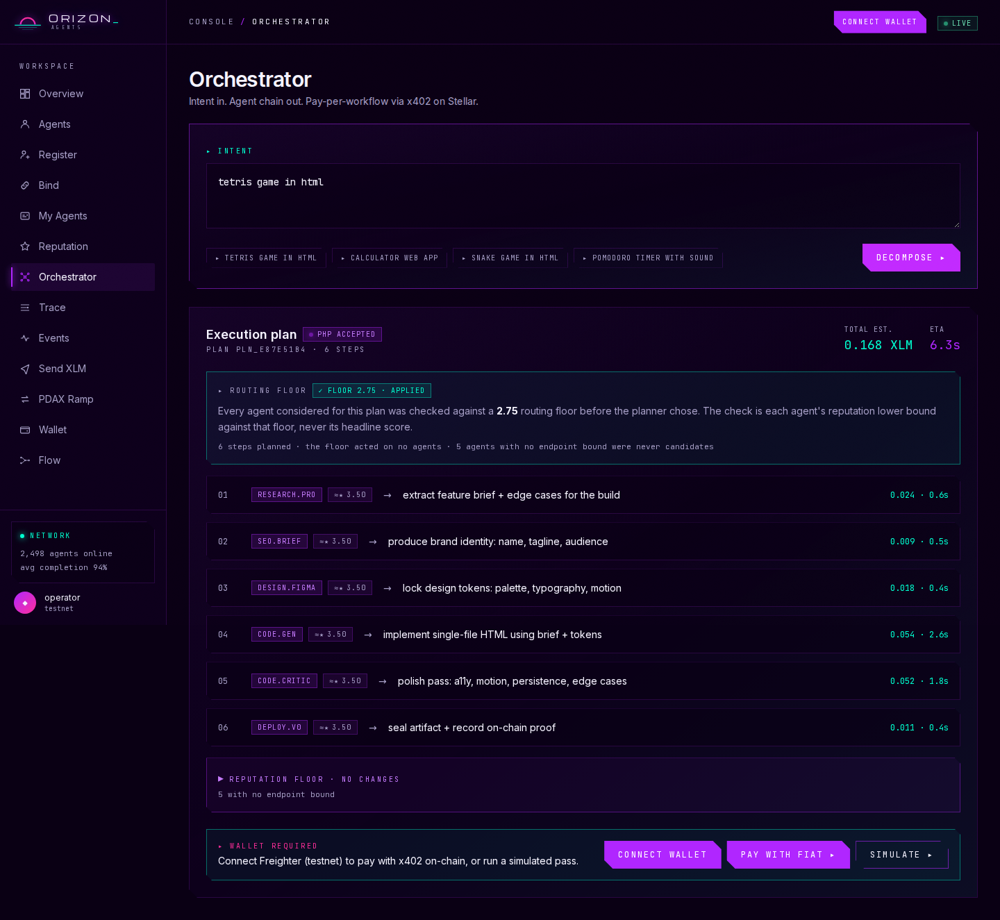
The Agent Registry states the selection floor once, above the table (floor 2.75, checked against each agent’s reputation lower bound, never the headline score). Agents registered on-chain against the public registry carry an “external” provenance mark; the seeded first-party catalog rows carry none. Standing marks sit beside the agent: “not yet operational” (registered, no endpoint bound) and “delisted by operator”.
A third mark, “below floor · not eligible”, flags any agent whose lower bound falls under the floor; every agent on the live registry currently clears it.
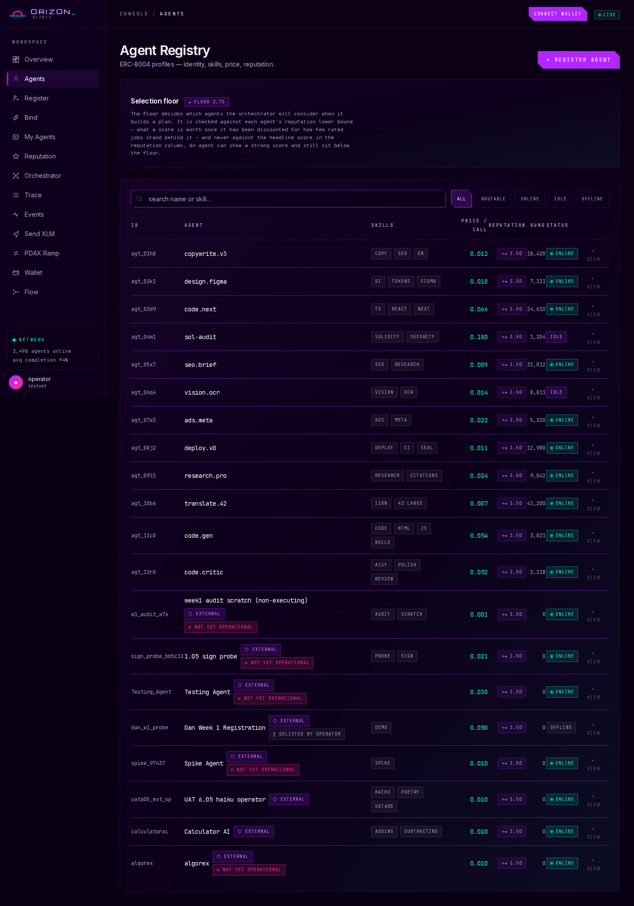
The operator dashboard as a visitor sees it with no wallet connected. Agent ownership is read from the chain, so the page shows only a prompt to connect; connecting reads public registry data and signs nothing.
Once the owner connects their wallet, the same page lists every agent that wallet owns on-chain, with its reputation and routing standing, its endpoint binding, and a Settlement panel of what it has been paid (read from the escrow’s on-chain charge events).
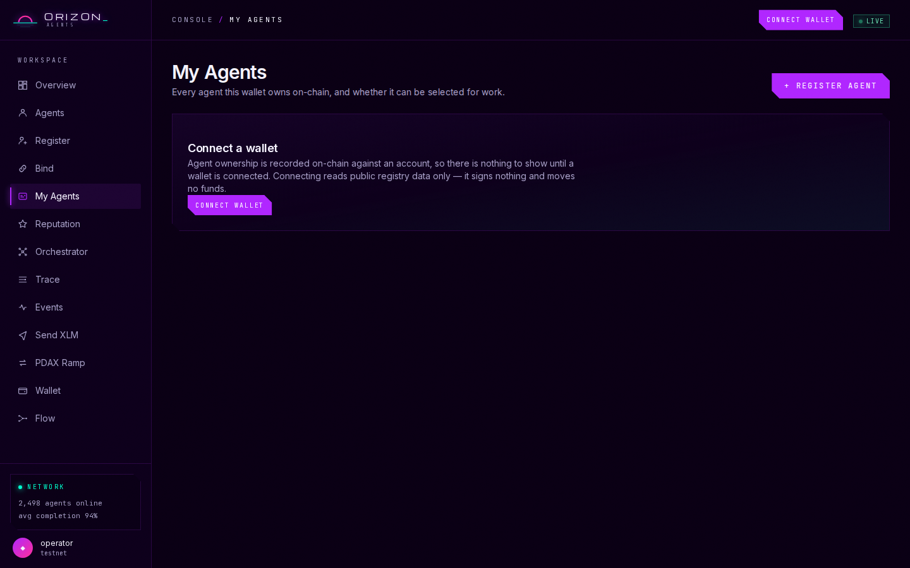
The operator endpoint-binding page. An operator enters the id of the agent they registered on-chain and the HTTPS endpoint that runs its work; the registry issues a one-time challenge naming the agent, the endpoint and a nonce, and the wallet that owns the agent signs it — nothing else can authorize the binding. Ownership stays on-chain; the endpoint is an off-chain service record that can be re-bound.
Captured with no wallet connected, so the button reads “connect the owner wallet to sign”. weather_bot and https://agent.example.com/run are the form’s placeholders, not a real binding.
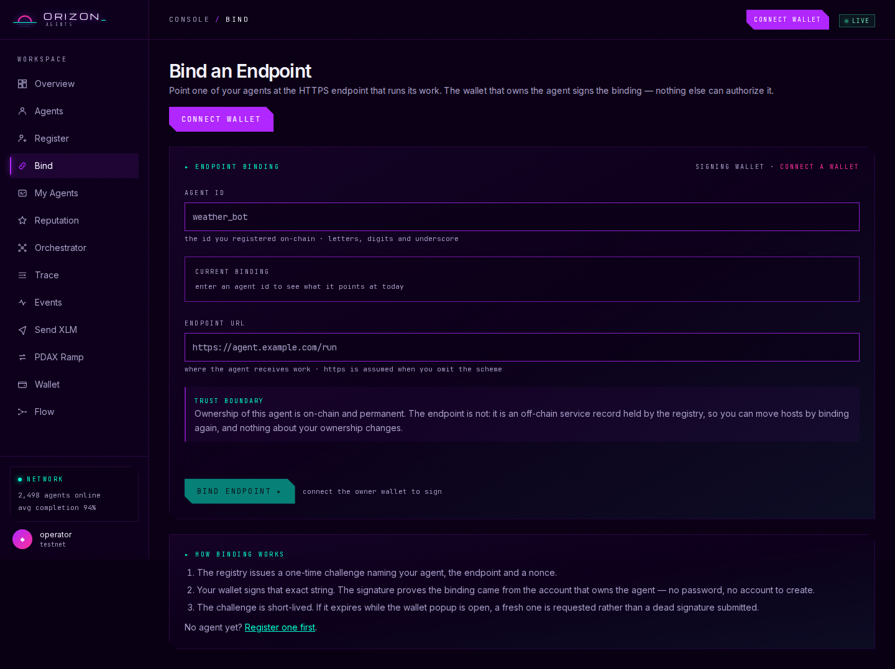
The production backend’s readiness probe. cold_start shows that a brand-new agent clears the routing floor: its reputation lower bound is 5677 bps against a 5500 bps floor — a 177 bps margin (2.84 vs 2.75 on the dApp’s 5-point scale), so routable: true. ratings.writer reports whether production can write ratings; it reads scorer: the backend’s signer is the ReputationLedger’s authorized scorer (GDB4N25…), so every paid run’s ratings are written on-chain.
The JSON body was re-indented in the browser for legibility; its content is unchanged.
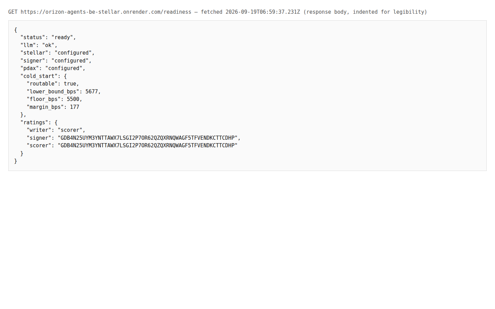
The backend half of the Week-2 branch feat/week-2-dan (124 commits, merged 2026-09-18). BLO-121: when the planner (LLM) fails, the buyer now gets a fallback plan built from agents that passed the routing checks, flagged planner_fallback: true, instead of a 502. Observable ratings: /readiness gains the ratings field, the service logs at boot whether it can write ratings, and a failed rating names its cause. Log redaction: configured secrets and key-shaped strings are masked on every log line.
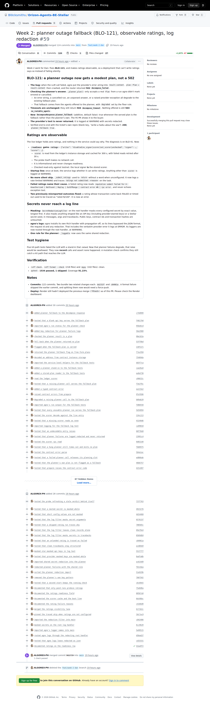
The frontend half of BLO-121 (34 commits, merged 2026-09-18). When the backend serves a fallback plan, the plan card shows a calm notice above Authorize and Simulate saying the planner was unavailable and the plan was built only from agents that passed the routing checks, with “Ask the planner again”, which re-runs the intent the buyer actually submitted. The description lists its own verification (unit, Playwright and axe checks); the merge commit shows 5 checks passed.
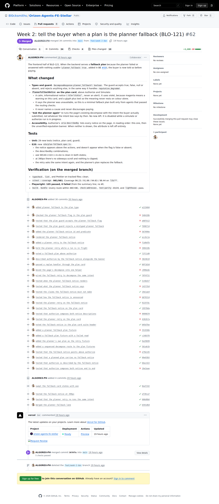
Rie’s Week-2 QA work in the public UAT repository, merged as PR #3 on 2026-09-17: 142 commits, 141 of them by rie-hash14 (21 on 12 Sep, 50 on 16 Sep, 70 on 17 Sep) plus one merge of main by ALGOREX-PH. They add the UAT coverage for 6.02 (reputation floor), 6.05 (external dispatch) and 6.06 (operator surfaces), and the defect log entries D-036 → D-049.
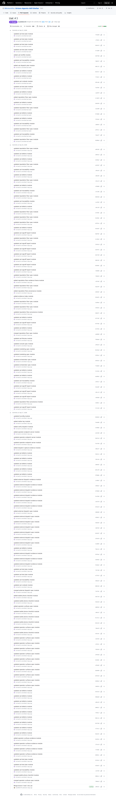
GitHub’s own search for backend PRs merged 13–18 Sep 2026 returns 13, numbered #41 to #59, covering Epic 2 (2.01 endpoint binding, 2.02 verifiable bounded dispatch, 2.03 external step failure semantics, 2.04 reference-agent contract, 2.06 settlement evidence), Epic 3 (3.02 excluded agents and the floor, 3.03 routing-time reads) and the Week-2 branch.
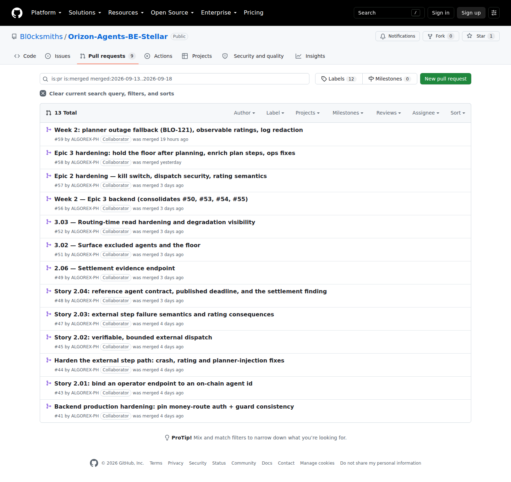
The same search on the frontend returns 10, numbered #48 to #62, including the 2.01 binding UI (#50), the 2.05 binding step in registration (#51), the 2.06 operator dashboard (#52), the 3.02 floor visibility contract (#54), the 3.04 plan card (#56) and the Week-2 branch (#62).
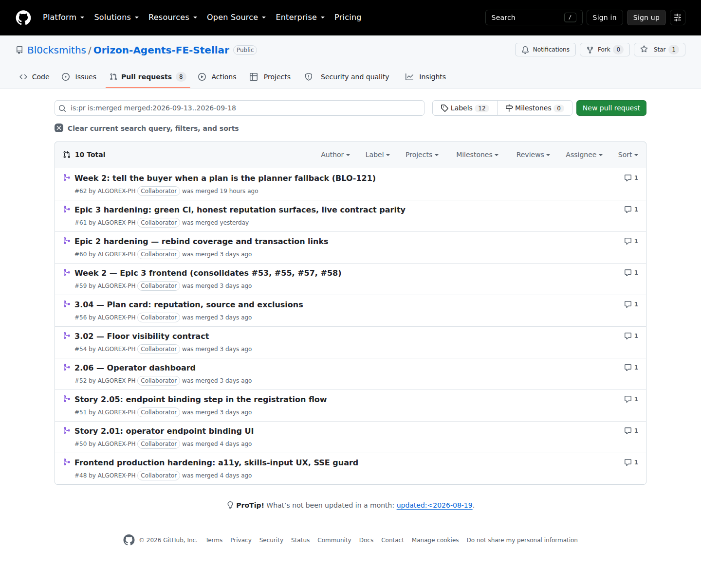
Merged 2026-09-16. The contract repo’s record of what is deployed (addresses.json for testnet, addresses.mainnet.json) was git-ignored, so it existed only on the machine that last deployed. It is now tracked in git, giving story 3.07’s contract-id drift check a canonical file to compare the backend configuration against. The PR records that all five contract ids on both networks matched the backend’s .env.example when committed.
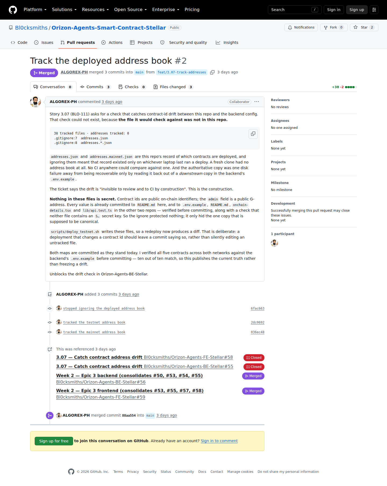
Orizon-Agents-Example-Agent-Stellar, created 2026-09-15: a copyable external agent in one file (agent.py, one dependency) that verifies the signature on Orizon’s signed dispatches before doing any work and answers with the response contract. Its README walks an operator through five steps — run, expose, bind, route, verify.
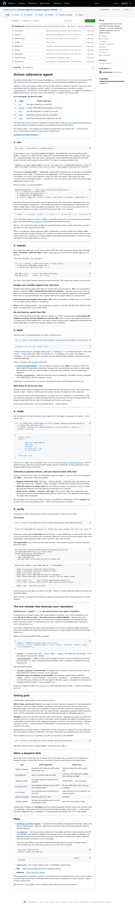
A testnet admin transaction on 2026-09-19 (06:16:57 UTC, ledger 4755006, Successful), invoked by GA7AI5…6R5OQV: set_scorer(GDB4…CDHP) on the ReputationLedger (CDCS…22ZT).
It makes the production backend’s key (GDB4N25…) the ledger’s authorized scorer, so every paid run’s ratings are written on-chain by production. The ratings check shipped in /readiness (BE #59, Evidence 05) verifies that match on every boot.
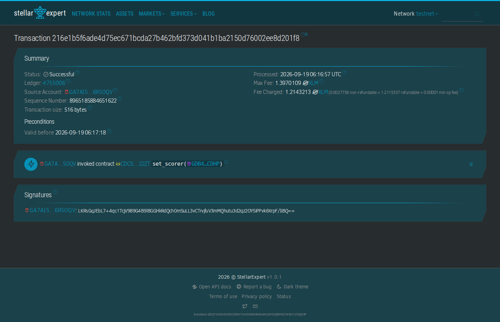
The Week-2 build thread from @OrizonAgents402, published 2026-09-19 at 08:18 PHT (00:18 UTC), with a 40-second video: “This week, we focused on making external agents actually work safely and making reputation part of the routing”.
x.com shows a blank page to a logged-out automated browser, so this capture is X’s own embed view of the same post id (the second URL below).